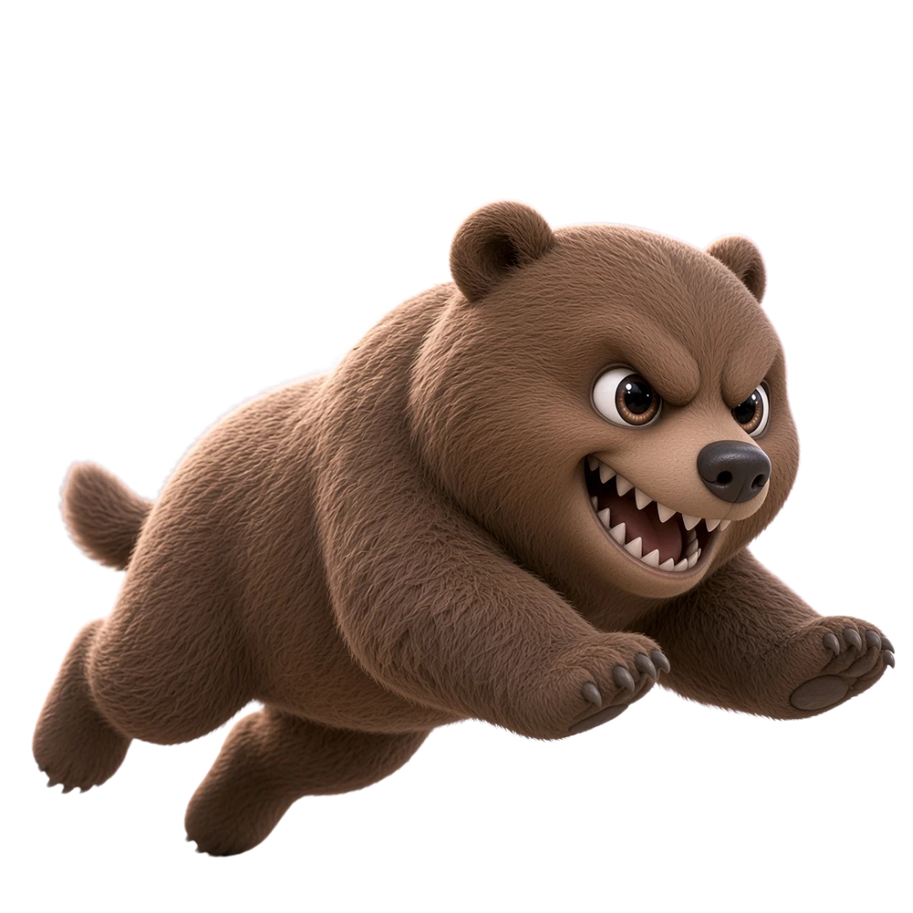
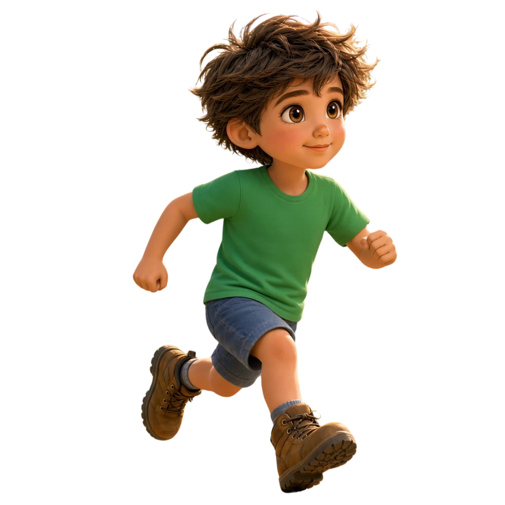

Run to the cabin before the hungry bear catches up!


Try again!
The hungry bear carried you off into the woods.
The word was
Bear
🐻
✨ Style sample: Forest Frenzy with your forest and bear. Type cabin to reach safety, or press wrong letters to see the bear carry the runner into the woods. Your real app hasn't changed yet.
Run to the cabin before the hungry bear catches up!


The hungry bear carried you off into the woods.
The word was